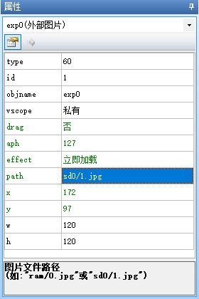
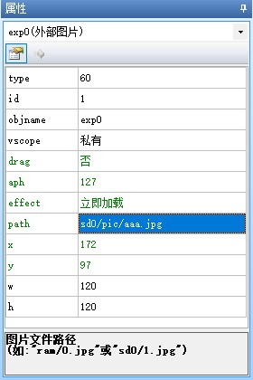
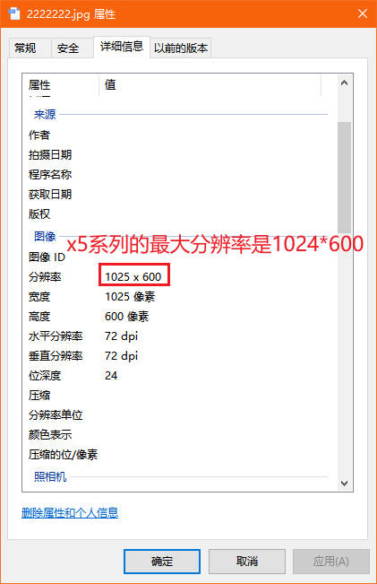
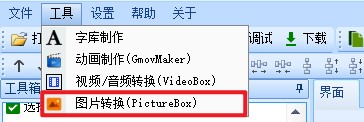

外部图片控件
外部图片控件仅X系列支持
X2系列解析外部图片控件会出现问题，请勿使用。
外部图片控件用于显示SD卡中的图片，仅X系列支持，需要插入SD卡
图片格式支持jpg和xi格式,直接将图片放在SD卡中即可调用
外部图片控件-使用详解
请提前将转换好的资源文件复制到SD卡或者虚拟SD卡文件夹，并且填写正确的path属性。
注意
当需要在上位机的模拟器里调试时，请将资源复制到虚拟SD卡文件夹中，需要在串口屏实物上调试时，请将资源复制到SD卡里，并插到串口屏上
虚拟SD卡文件夹打开方式

SD卡不能超过32GB（例如：512M、1GB、2GB、4GB、8GB、16GB、32GB都是可用的），请格式化为FAT32格式
例如放在SD卡根目录的1.jpg文件，对应的路径是
sd0/1.jpg

放在SD卡pic目录下的aaa.jpg文件，对应的路径是
sd0/pic/aaa.jpg

外部图片控件-常见问题
外部图片显示不正常
步骤1、检查图片的分辨率是否超过了屏幕的分辨率导致显示异常

步骤2、使用ps打开jpg图片，将该图片另存为，保存时格式选择“基线（“标准”）”

外部图片有透明部分，但是jpg不支持透明
外部图片使用jpg格式时无法显示透明图层
必须使用png图片用上位机自带的图片转换工具转为.xi格式的图片

外部图片控件-样例工程下载
演示工程下载链接：
外部图片控件-相关链接
哪些控件属性可以运行中修改，哪些不能运行中修改，绿色属性和黑色属性有什么区别？
外部图片控件-属性详解
提示
绿色属性可以通过上位机或者串口屏指令进行修改，黑色属性只能在上位机中修改或者不可修改，可通过上位机进行修改指“选中控件后通过属性栏修改控件的属性”
type属性 -控件类型，固定值，不同类型的控件type值不同，相同类型的控件type值相同，可读，不可通过上位机修改，不可通过指令修改。参考： 控件属性-控件id对照表
id属性 -控件ID，可通过上位机左上角的上下箭头置顶或置底，可读，可通过上位机修改左上角的箭头置顶或置地间接修改，不可通过指令修改。参考： 如何更改控件的前后图层关系
objname属性 -控件名称。不可读，可通过上位机进行修改，不可通过指令更改。
vscope属性 -内存占用(私有占用只能在当前页面被访问，全局占用可以在所有页面被访问)，当设置为私有时，跳转页面后，该控件占用的内存会被释放，重新返回该页面后该控件会恢复到最初的设置。可读，可通过上位机进行修改，不可通过指令更改。参考：跨页面赋值，全局变量操作
drag属性 -是否支持拖动:0-否;1-是。仅x系列支持。可读，可通过上位机修改，可通过指令修改。
aph属性 -不透明度(0-127)，0为完全透明，127为完全不透明。仅x系列支持。可读，可通过上位机修改，可通过指令修改。
effect属性 -加载特效:0-立即加载;1-上边飞入;2-下边飞入;3-左边飞入;4-右边飞入;5-左上角飞入;6-右上角飞入;7-左下角飞入;8-右下角飞入。仅x系列支持，在上位机中设置为立即加载时，无法通过指令变为其他特效，当在上位机中设置为非立即加载的特效时，可以变为立即加载，也可以再改为其他特效
path属性 -图片文件路径(如:”ram/0.jpg”或”sd0/1.jpg”)。
x属性 -控件的X坐标。可读，可通过上位机修改，x系列可通过指令修改，其他系列不可通过指令修改。
y属性 -控件的Y坐标。可读，可通过上位机修改，x系列可通过指令修改，其他系列不可通过指令修改。
w属性 -控件的宽度。可读，可通过上位机修改，不可通过指令修改。
h属性 -控件的高度。可读，可通过上位机修改，不可通过指令修改。